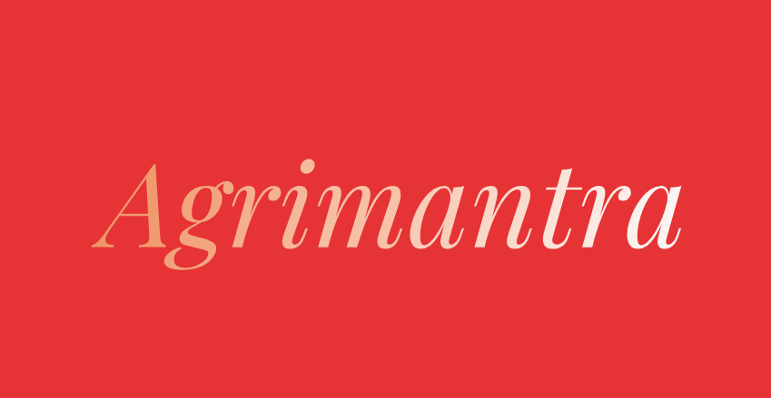

Your Personal Farming Assistant
From Worry to Yield: The AgriMantra Effect
Before AgriMantra
Uncertainty and worry over crop diseases.
After AgriMantra
Confidence with instant diagnosis and solutions.
Ask Me Anything
Press the button and ask about crop prices, weather, or farming techniques.
Your question will appear here...
Crop Disease Detection
Upload a photo of your crop to identify diseases and get solutions.
No file selected
Government Schemes
PM-KISAN
Income support scheme for small and marginal farmers.
Fasal Bima Yojana
Crop insurance scheme to protect against yield losses.